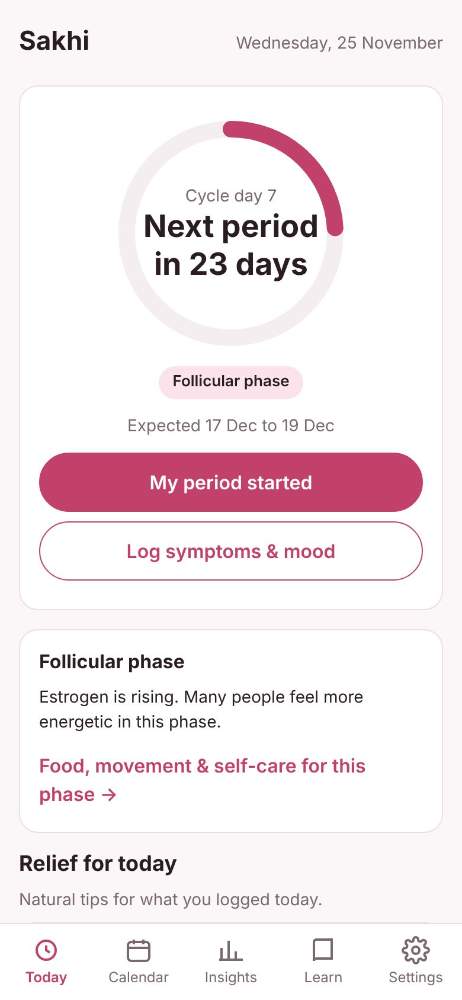
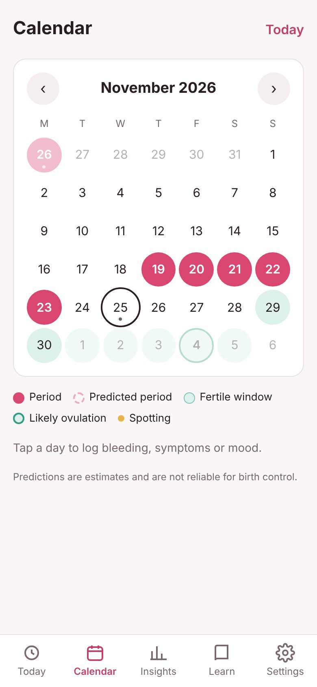
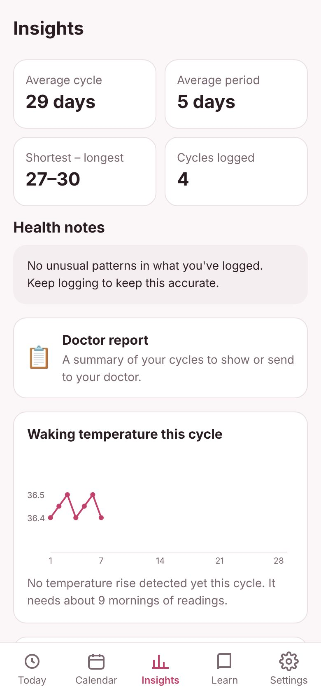
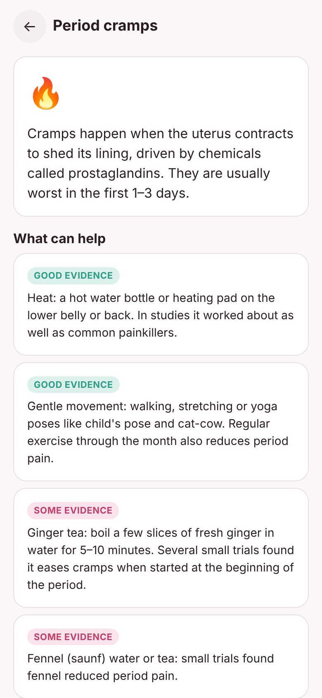

Honest predictions
Your next period shown as a date range, based on your own cycles. The fertile window and likely ovulation are clearly marked as estimates.
Free · English & हिन्दी · Private
Sakhi tracks your periods, explains what your body is doing, and gently tells you when something is worth showing a doctor. Everything stays on your phone.

Built for girls and women aged 16 and over, from your first years of periods to perimenopause.
Your next period shown as a date range, based on your own cycles. The fertile window and likely ovulation are clearly marked as estimates.
Gentle "talk to a doctor" notes for irregular, long or short cycles, heavy or painful periods, missed periods, and patterns linked to PCOS or anaemia.
Relief tips for cramps, bloating, headaches, acne, mood and more, each labelled by how strong the evidence is, with safety notes.
A clear summary of your cycles, symptoms and patterns to show or share with your doctor, in English or Hindi.
Your cycle, discharge, breast self-check, PCOS, contraception, pregnancy, HPV and screening, nutrition, myths vs facts, and more.
Week by week guidance, your due date, check-ups and the danger signs that need a hospital, with India's free services and ambulance numbers.
Log your waking temperature to confirm ovulation and make the next prediction more accurate. Helpful when trying to conceive.
Reminders before your period, for a late period, for a monthly breast check and for your pill, plus an optional PIN to keep the app private.



Period data is some of the most personal information there is. So Sakhi was built to never collect it.
Health alerts follow the definitions of normal periods used by gynaecologists worldwide (FIGO and ACOG). Every remedy says how strong the evidence is, and when to see a doctor instead.
Sakhi gives estimates and general information. It can't diagnose any condition and must not be used as birth control. Always talk to a doctor about health concerns.
Yes. All features are free, with no ads.
Only on your phone (or, on the website, in your browser on that device). Nothing is sent to us or anyone else.
No. Predictions are estimates, and cycles can change without warning. Please use a reliable contraceptive method; the app's guide explains the options.
Use Settings → Backup → Export my data, move the file to your new phone, and import it there.
Yes. The whole app, including all guides and remedies, works in English and Hindi. You can switch at any time.
Reminders work in the Android app. The website works for tracking, insights and guides, but your data stays in that one browser.